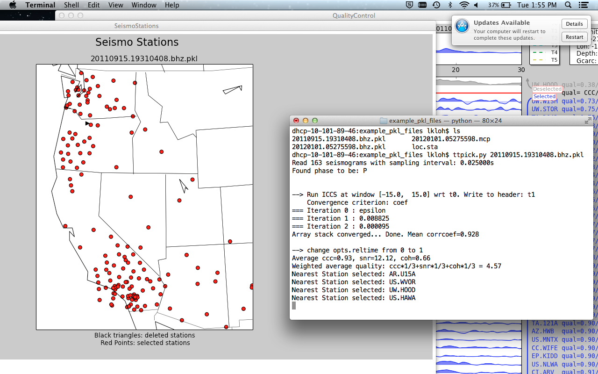

12. Visualizing Stations on a map¶
Note: NOT available in aimbat-stable.
After running:
ttpick.py <sac-files>
Red dots represent circles used for computing delay times; black triangles represent discarded stations. Click on a dot to get the station name.
